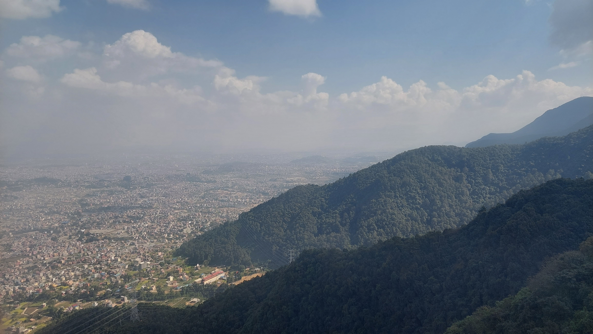
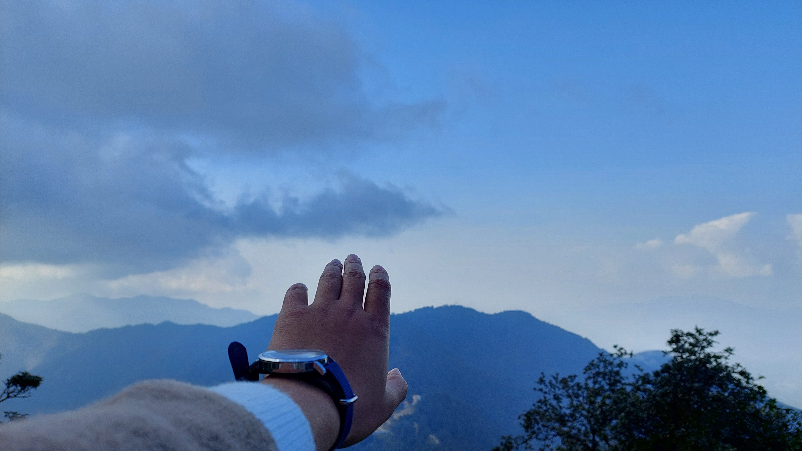

Crowded Kathmandu City
Kathmandu is one of the most populated and polluted city of nepal.
Due to pollution many people have got health issues. Number of people suffer from chronic diseases.
On comparasion this city offers you lot of facilities but at the same time over-population has resulted in many problems.
Kathmandu is in the northwestern part of the Kathmandu Valley to the north of the Bagmati River and covers an area of 50.7 km2 (19.6 sq mi). The average elevation is 1,400 metres (4,600 ft) above sea level.
Chandragiri Hills
Chandragiri Hill ( Nepali: चन्द्रागिरी ) is seven kilometres from Thankot, and lies on the south-west side of Kathmandu Valley which is 2551 metres above sea level.
The hill provides panoramic views of Kathmandu Valley and the Himalayan ranges from Annapurna to Everest. Chandragiri hill has cable car system to reach up to the temple of Bhaleshwor Mahadev.
Hot Chocolate
Hot chocolate, also known as hot cocoa or drinking chocolate, is a heated drink consisting of shaved chocolate, melted chocolate or cocoa powder, heated milk or water, and usually a sweetener. Hot chocolate may be topped with whipped cream or marshmallows.
Hot chocolate made with melted chocolate is sometimes called drinking chocolate, characterized by less sweetness and a thicker consistency.